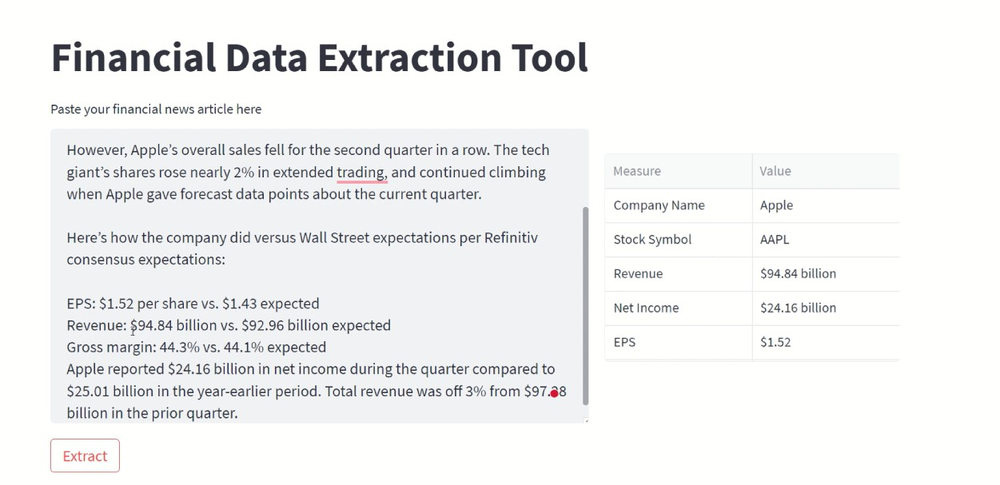

Selected Personal Projects
Finance Insight Extractor - with OpenAI
This project introduces a user-friendly web application built on Streamlit, designed to extract essential financial metrics from news articles related to company finance reports. Leveraging the OpenAI API, the tool accurately identifies key details such as company name, stock symbol, revenue, net income, and more. By automating this process, users can quickly gather critical insights from financial news articles, streamlining their analysis and decision-making processes. Whether for investors, financial analysts, or business professionals, our app offers a convenient and efficient solution for accessing vital financial information with ease.
COVID-19 Vaccine Availability Checker - Desktop App
In response to the global urgency for COVID-19 vaccination, this project leverages the publicly available API provided by the Indian government. Utilizing Python, the script utilizes the requests module to send API GET requests and retrieve JSON data. Users input the area Pincode and desired date to check vaccine availability, addressing the challenge of slot scarcity caused by India's vast population. This initiative aligns with the government's mandate of online appointment booking via the COWIN portal, facilitating easier access to vaccinations for citizens.
Heart Risk Prediction - WebApp
This project focuses on predicting the risk of heart disease using machine learning techniques. Leveraging a dataset sourced from Kaggle, it encompasses a range of patient parameters such as cancer history, kidney issues, previous heart conditions and lifestyle habits like eating and doing exercise. The primary algorithm employed is the decision tree, chosen for its superior accuracy among various options. Additionally, to optimize memory usage, the LightGBM framework was integrated into the project. To provide a user-friendly interface, Flask was utilized to create a local server hosting an HTML form. This form allows users to input their information, which is then encoded and processed by the trained machine learning model. Finally, the output is presented as a percentage representing the risk of heart disease. This project not only showcases the application of machine learning in healthcare but also emphasizes usability and accessibility through its intuitive interface.
University Management System - Desktop App
University Management System (UMS) by Easy Solution is a robust software solution designed specifically for colleges and universities. It's the one-stop-shop for managing all aspects of educational institutions, from handling fees and exams to keeping track of attendance and student records. Developed using Java and integrated with MySQL database, UMS ensures seamless data management and retrieval. What's more, the graphical user interface (GUI) is implemented using Java, employing technologies like Swing and AWT to provide a user-friendly experience. With UMS, administrative tasks become simpler and more efficient, allowing institutions to focus on what truly matters – providing quality education.
Chatting Application in Java - (Whatsapp Clone)
This project revolves around a desktop-based chat application designed to streamline real-time communication, transcending geographical barriers. Built using Java Swing and socket packages, the client-server architecture facilitates seamless interaction among users. By leveraging TCP and UDP socket connections, our application enables multiple clients to connect to a central server, fostering collaborative exchanges. The server module awaits client connections, while the client module serves as the gateway for users to initiate communication. Through this project, we showcase the simplicity and elegance of Java network programming, making it accessible to beginners and emphasizing the power of technology to unite individuals and ideas across distances.

Object Oriented Design of Vehicle Parking System
The Parking Lot System project is a personal project focused on creating a user-friendly parking management solution. It comes in two versions: Basic and Advanced.
In the Basic Version, the system handles simple parking tasks with one entrance and exit, managed by an admin. However, it doesn't deal with different vehicle types or multiple parking levels.
The Advanced Version solves these challenges. It supports multiple floors and has separate parking spaces for two-wheelers and four-wheelers. While it's a command-line tool without fancy graphics, it's all about showcasing solid understanding of Object-Oriented Programming principles like inheritance, polymorphism and abstraction.
Through this project, I've sharpened my OOP skills and shown how to tackle real-world problems with thoughtful design and coding.

Audio Filter Designs
Developed a range of bespoke noise reduction and audio processing filters using MATLAB to cater to specific project requirements. These filters were meticulously designed and optimized for various applications, showcasing proficiency in signal processing techniques. The implementation addressed diverse needs, from eliminating background noise to enhancing audio quality, demonstrating a comprehensive understanding of MATLAB's capabilities in audio engineering.

| Filter type | GitHub Link |
|---|---|
| Band Reject Filter |

|
| Band Pass Filter |
|
| Low Pass Filter - (Gaussian Noise) |
|
| Low Pass Filter - (Random Noise) |
|
| Notch Filter - (ECG Signal) |
|